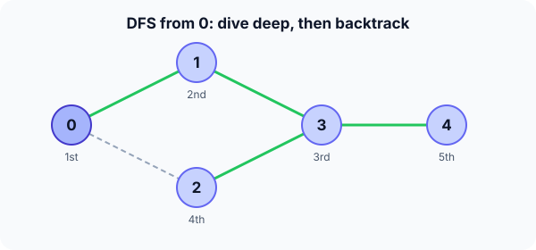

Prerequisites
- Graph representations.
- Stack and recursion.
- BFS, to compare.
The analogy
Everyday analogy
Explore a maze with one rule: keep a hand on the wall and walk until you hit a dead end, then go back to the last junction and take the next corridor.
DFS explores a graph exactly like that. The recursion (or an explicit stack) remembers the junctions, so backtracking always returns to the most recent unfinished one.
How it works
Precondition: none. Any graph, directed or undirected, weighted or not. DFS does not find shortest paths.
Start with one DFS by hand
Same graph as BFS: 0–1, 0–2, 1–3, 2–3, 3–4. Start at 0 and always try neighbours in increasing order. Predict, then open "Check".
Example: predict before you read
Step 1. From 0, which vertex do you visit next, and then from there?
Check
0 → 1 (smallest unvisited neighbour of 0), then 1 → 3 (1's neighbours are 0, visited, and 3).
Step 2. Cover the next line and guess: from 3, where do you go?
Check
3's neighbours are 1 (visited), 2 and 4. Take 2. From 2, both neighbours 0 and 3 are visited: dead end.
Step 3. Backtrack. Predict the final visit order.
Check
Back to 3, which still has 4 unvisited: visit 4. Then everything is finished. Order: 0, 1, 3, 2, 4.

Quick recall: Before reading further, cover the text above and say out loud: when does DFS backtrack?
Check your answer
When the current vertex has no unvisited neighbour left; it returns to the vertex it came from.
Finish the picture: discovery and finish times
Number each event: entering a vertex, and leaving it after all its neighbours are done.
- Order of entering. Predict it.
Check
0, 1, 3, 2, 4 (the visit order above).
- Order of finishing. Predict it.
Check
2 finishes first (dead end), then 4, then 3, then 1, then 0. Finish order is what topological sort uses.
Quick recall: Without scrolling up, say out loud: why do DFS and BFS give different orders on the same graph?
Check your answer
BFS finishes a whole layer before going deeper (queue); DFS follows one path to the end first (stack).
The rule in plain words
Visit a vertex: mark it, then for each unvisited neighbour, visit it recursively. When no unvisited neighbour remains, return (backtrack).
Run it from every still-unvisited vertex to cover a disconnected graph; each run explores one connected component.
Quick recall: Before you read the code, write the recursive DFS in your own words. Then check below.
Check your answer
Mark the vertex visited and record it. For each neighbour, if it is unvisited, run DFS from it. When the loop ends, return.
The code
Read this code after you have done the DFS by hand. It will make more sense.
int dfs(int adj[][5], int n, int u, int visited[], int order[], int k) {
visited[u] = 1;
order[k++] = u; /* record when first reached */
for (int v = 0; v < n; v++)
if (adj[u][v] && !visited[v])
k = dfs(adj, n, v, visited, order, k); /* go deep first */
return k; /* all neighbours done: backtrack */
}Definition
What you just did, in one line: depth-first search explores a graph by following one path as deep as possible and backtracking at dead ends, using recursion or a stack.
flowchart TD
A["visit u: mark it"] --> B{"u has an unvisited neighbour v?"}
B -->|yes| C["visit v (go deeper)"]
C --> B
B -->|no| D["backtrack: return to the caller"]
How fast is it?
Quick recall: Before looking at the formula, predict: does DFS cost more or less than BFS?
Check your answer
The same, $O(V + E)$: each vertex is visited once and each edge examined a constant number of times.
Each vertex is visited once, and its adjacency list is scanned once during that visit:
$$O\Big(V + \sum_{v} \deg(v)\Big) \;=\; O(V + E)$$The recursion depth can reach $V$ (on a long path), so the stack needs $O(V)$ space.
| Measure | Cost | Why |
|---|---|---|
| Time (adjacency lists) | $O(V + E)$ | Each vertex and edge handled once |
| Time (adjacency matrix) | $O(V^2)$ | Each visit scans a full row |
| Extra space | $O(V)$ | Visited flags plus recursion depth |
| Shortest paths | No | It may reach a vertex by a long detour first |
Warning
Recursive DFS on a graph with a very long path (say $10^6$ vertices in a line) can overflow the call stack. Use an explicit stack in that case.
Exam tip
Know which problems DFS solves: cycle detection, topological sort, connected components, and path existence. Shortest unweighted path is BFS's job, not DFS's.
Common mistakes
- Marking a vertex after exploring its neighbours, so cycles cause infinite recursion.
- Expecting DFS to find shortest paths.
- Running it only from vertex 0 on a disconnected graph and missing other components.
Try it yourself
Exercise 1 (warm-up)
Run DFS from vertex 3 on the same graph (neighbours in increasing order). Give the visit order.
Hint
3's smallest neighbour is 1.
Answer
3, 1, 0, 2, 4. From 1 go to 0, from 0 to 2, then 2 is stuck, so back up to 3, which still has 4.
Exercise 2 (a bit harder)
A graph has edges 0–1, 2–3, 3–4 and an isolated vertex 5. How many DFS runs from unvisited vertices are needed to visit everything, and what does that number mean? Write your answer down before you open it.
Show answer
3 runs: from 0 (visits 0, 1), from 2 (visits 2, 3, 4) and from 5. The number of runs is the number of connected components.
Did you know?
Did you know?
DFS goes back to the 19th century: Charles Pierre Trémaux described it as a method for escaping mazes using chalk marks on the walls.
Your computer uses DFS ideas to find which objects are still reachable during garbage collection, and in tools like find that walk a directory tree.
Key points to remember
If you remember one thing from each line, remember the because.
- DFS dives deep first because it recurses into a neighbour before looking at the next one.
- It backtracks to the latest junction because the call stack is last-in, first-out.
- It is $O(V + E)$ because each vertex is visited once and each adjacency list scanned once.
- It does not give shortest paths because it may reach a vertex through a long detour first.
- Finish order matters because a vertex finishes only after everything reachable from it.
Self-check questions
Answer these in order, out loud. They follow the page, so your answers become the script of your video.
- How is DFS like exploring a maze with a hand on the wall?
Sample answer
You follow one corridor to its end, then go back to the last junction and try the next corridor.
- Walk through DFS from 0 on the graph 0–1, 0–2, 1–3, 2–3, 3–4.
Sample answer
0 → 1 → 3 → 2; 2 is a dead end, so back to 3 → 4; then everything finishes. Order 0, 1, 3, 2, 4.
- Why does the code mark
visited[u]before looping over neighbours?A good answer mentions cycles.
Sample answer
If u weren't marked first, a cycle could lead back to u and start visiting it again forever.
- So what is DFS, in one sentence?
Sample answer
A traversal that follows one path as deep as possible, backtracking at dead ends, using recursion or a stack.
- Why can't DFS be used for shortest paths?
A good answer uses vertex 2 in the example.
Sample answer
DFS reached 2 via 0 → 1 → 3 → 2, three edges, although 2 is a direct neighbour of 0. The first arrival is not necessarily the shortest.
- What are DFS's time and space costs?
Sample answer
$O(V + E)$ time on adjacency lists and $O(V)$ space for visited flags and the recursion stack.
- What problems is DFS good for?
Sample answer
Cycle detection, topological sorting, finding connected components, and checking whether a path exists.
- If you had to teach this to a friend in 2 minutes, what would you leave out, and why?
Sample answer
I'd leave out finish times and the stack-overflow issue. I'd keep the maze analogy, the 0, 1, 3, 2, 4 trace with the backtrack at 2, and "deep first, $O(V + E)$, not for shortest paths".
External resources
- VisuAlgo: DFS and BFS: run DFS and see the recursion and edge types.
- GeeksforGeeks: DFS: recursive and iterative code.
- Wikipedia: Depth-first search: history, edge classification and uses.
Videos
- YouTube search: DFS explained: pick a walkthrough with backtracking shown.